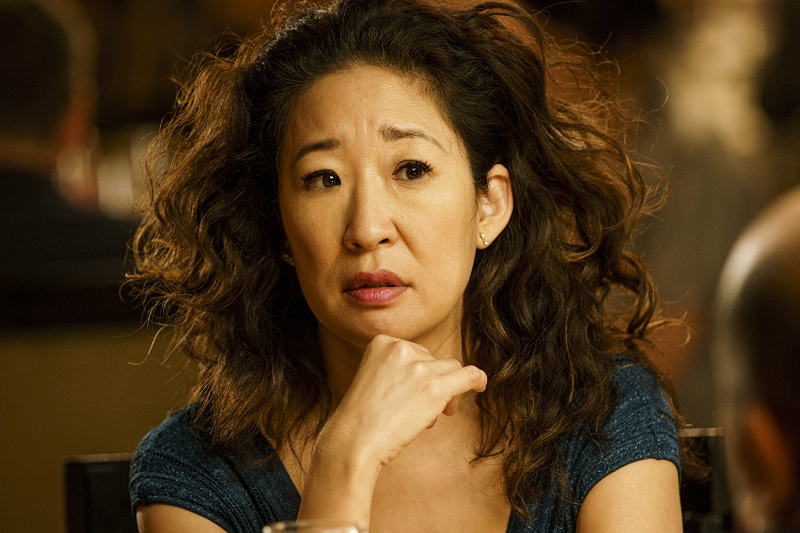
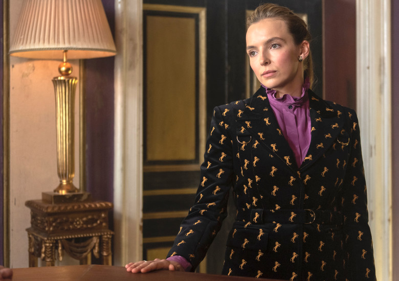
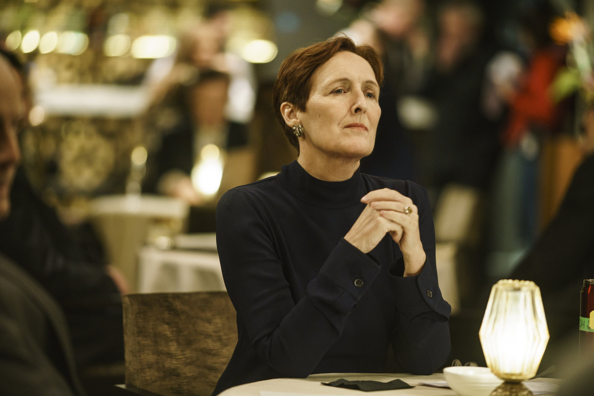
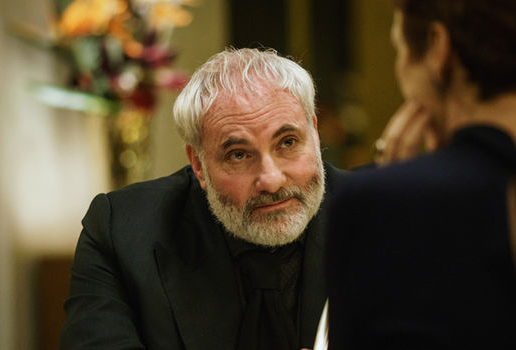
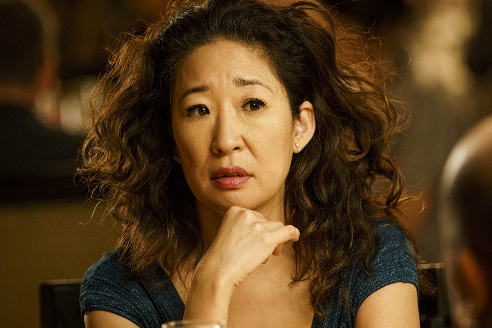
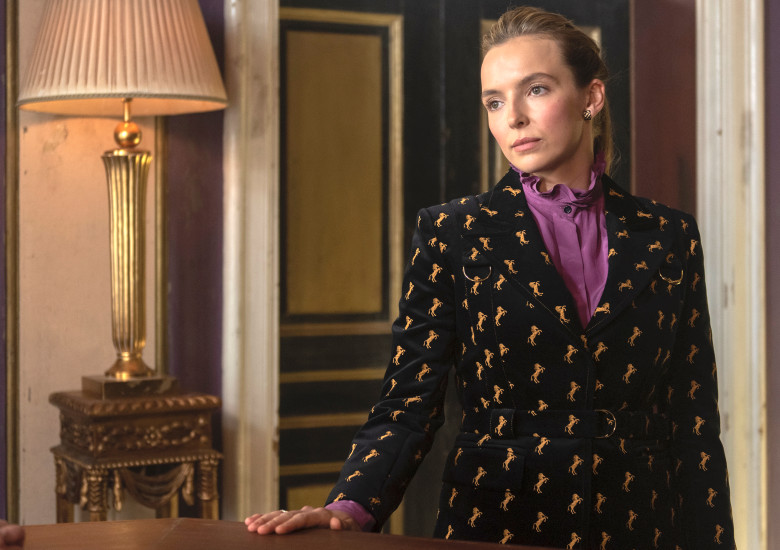
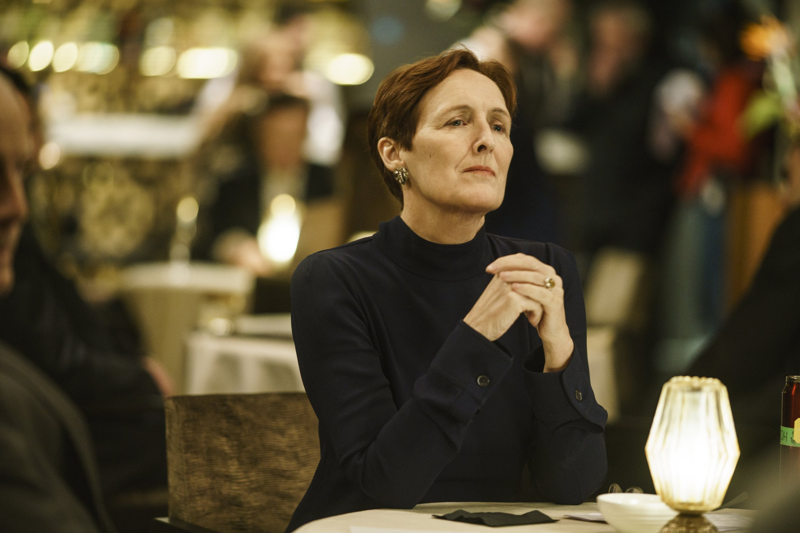
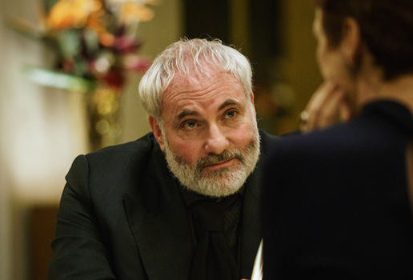

Characters
Eve Polastri
Eve started working at MI5 assessing risk,
yet never living it. She’d always dreamed
of working as a spy but instead, she was
desk-bound. Struggling to find meaning in
her work, her ennui began to get the better
of Eve, and she couldn’t shake the creeping
sense of dissatisfaction. Her fantasy crossed
her path: Villanelle.
Villanelle
Villanelle possesses a cold brutality under
her innocent-looking exterior. With an
appetite for killing groaning in her gut, she is
a living, breathing, shopping, killing
psychopath. Contentedly living outside any
human moral code, Villanelle kills with flare,
recklessness and absolutely no conscience.
Carolyn Martens
Charismatic, erudite, fiercely well read, and
irreverent, Carolyn is a principled yet
ruthless leader in her field. As a young
agent on the ground in Moscow in the '80s,
she cultivated one of MI6’s most valuable
assets and has since saved the world at
least three times.
Konstantin
Konstantin is not afraid of anything or
anyone. He recruits and runs assassins,
but none more complex and demanding
than Villanelle. He understands that her
ego is a beast, and he is constantly walking
the tightrope of being able to manage it.
He doesn’t always know who she is going to
kill, he just he just tells her she has to.